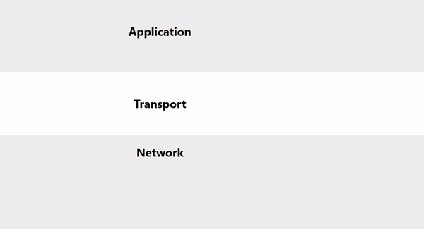
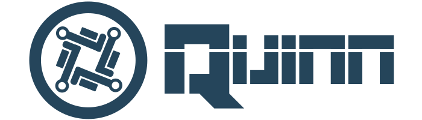

Networking Introduction
In this chapter, you will find a very short introduction to various networking concepts. Those concepts are key for understanding the motivations for QUIC.
1. TCP/IP and UDP Comparison
TCP: stands for 'transmission control protocol' and adds certain guarantees ontop of IP. It forms the backbone for almost everything you do online, from web browsing to IRC to email to file transfer. The protocol is reliable ordered in nature.
UDP stands for 'user datagram protocol' and adds certain guarantees ontop of IP, but unlike TCP, instead of adding lots of features and complexity, UDP is a very thin layer over IP and is also unreliable in nature.
| Feature | TCP | UDP | QUIC |
|---|---|---|---|
| Connection-Oriented | Yes | No | Yes |
| Transport Guarantees | Reliable Ordered | Unreliable | Reliable Ordered and Unreliable |
| Packet Transfer | Stream-based | Message based | Message based and Stream based |
| Automatic fragmentation | Yes | Yes, but better to stay below datagram size limit | Yes |
| Header Size | 20 bytes | 8 bytes | 16 bytes |
| Control Flow, Congestion Avoidance/Control | Yes | No | Yes, and user controlled |
2. The 5 Transport Guarantees
There are 5 main different ways you can transfer data:
| Transport Guarantees | Packet Drop (1) | Packet Duplication (2) | Packet Order | Packet Delivery |
|---|---|---|---|---|
| Unreliable Unordered | Any | Yes | No | No |
| Unreliable Sequenced | Any + old | No | Sequenced | No |
| Reliable Unordered | No | No | No | Yes |
| Reliable Ordered | No | No | Ordered | Yes |
| Reliable Sequenced | Only old | No | Sequenced | Only newest |
Unreliability gives great uncertainty with a lot of freedom, while reliability gives great certainty with costs in speed and freedom. That is why protocols such as QUIC, RUDP, SCTP, QUIC, netcode, laminar are built on UDP instead of TCP. UDP gives the end-user more control over the transmission than TCP can do.
3. Issues with TCP
Now the golden question: "Why choose so much uncertainty with UDP when TCP is so reliable and safe?". To answer that question we will have to delve a little deeper into some issues with TCP.
Head-of-line Blocking
One of the biggest issues with TCP is that of Head-of-line blocking. It is a convenient feature because it ensures that all packages are sent and arrive in order. However, in cases of high throughput (multiplayer game networking) and big load in a short time (web page load), this can be catastrophic to your application performance.
The issue is demonstrated in the following animation:

This animation shows that if a certain packet drops in transmission, all packets have to wait at the transport layer until it is resent by the other end. If the dropped packet is resent and arrived then all packets are freed from the transport layer.
Let's look at two areas where this head-of-line blocking issue is a huge deal.
Multiplayer Game Networking
Multiplayer action games are based on a constant stream of packets sent at a speed ranging from 10 to 30 packets per second. For the most part, the data in these packages are so time-sensitive that only the most recent data is useful. You can think of the input and position of the player, the orientation and speed, and the state of the physical objects in the world. If a single packet drops out we can not afford to queue up 10-30 packets a second until the lost packet is retransmitted. This could cause annoying lag behavior and a bad user experience.
Web Networking
Game networking is not the only area where this head-of-line blocking is a big issue. The World Wide Web is a place where quick web-page load speeds are important (who wants to wait 200ms to the long right?). As websites get bigger and attention decreases, we need faster loading times for websites.
To tackle this issue, HTTP-2 introduced a technique called multiplexing. In short, this means that multiple TCP streams are initialized to communicate with the server. Then If one of them blocks the whole website can continue to load seemingly while that single stream is retransmitting.
We will take a deeper dive into this subject when looking at QUIC multiplexing.
Connection Setup Duration
In the standard HTTP+TLS+TCP stack, TCP needs a handshake to establish a session between server and client, and TLS needs its handshake to ensure that the session is secured.

First, the source sends an 'SYN initial request' packet to the target server to start the dialogue. Then the target server sends an 'SYN-ACK packet' to agree to the process. Lastly, the source sends an 'ACK packet' to the target to confirm the process, after which the message exchange can start.
Now if we want to secure the TCP connection, we have to use a protocol like TLS on top of it. In the case of TLS versions older than 1.3, an additional three more handshake messages are required.
You can see how expensive it is to create a secure TCP connection. In a scenario of TCP and TLS 1.2 with a 100ms latency, we need to wait for 6 x 100ms = 600ms to set up a connection. If the website is big, an additional load time can make the website load over a second. This, of course, is disturbing for our short attention spans.
Requests in Segment
A TCP segment can only carry a single HTTP/1.1 Request/Response. Consequently, a large number of small segments may be sent within an HTTP/1.1 session which can lead to overhead.
Client Connection Initiation
HTTP/1.1 transfers are always initiated by the client. This decreases the performance of HTTP/1.1 significantly when loading embedded files because a server has to wait for a request from the client, even if the server knows that the client needs a specific resource.



Pure-rust QUIC protocol implementation
Quinn is a pure-rust, future-based implementation of the QUIC transport protocol undergoing standardization by the IETF. This library is at draft 32.
Features
- Simultaneous client/server operation.
- Ordered and unordered stream reads for improved performance.
- Works on stable Rust, tested on Linux, macOS and Windows.
- Pluggable cryptography, with a standard implementation backed by rustls and ring.
- Application-layer datagrams for small, unreliable messages.
- Future-based async API.
- Experimental HTTP over QUIC.
Overview
- quinn: High-level async API based on tokio, see for usage. This will be used by most developers. (Basic benchmarks are included.)
- quinn-proto: Deterministic state machine of the protocol which performs no I/O internally and is suitable for use with custom event loops (and potentially a C or C++ API).
- quinn-h3: Contains an implementation of HTTP-3 and QPACK. It is split internally in a deterministic state machine and a tokio-based high-level async API.
- bench: Benchmarks without any framework.
- interop: Tooling that helps to run interoperability tests.
- fuzz: Fuzz tests.
Getting Started
Examples
$ cargo run --example server ./
$ cargo run --example client https://localhost:4433/Cargo.toml
This launches an HTTP 0.9 server on the loopback address serving the current
working directory, with the client fetching ./Cargo.toml. By default, the
server generates a self-signed certificate and stores it to disk, where the
client will automatically find and trust it.
Links
- Talk at RustFest Paris (May 2018) presentation; slides; YouTube
- Usage examples
- Guide book
Usage Notes
Click to show the notes
Buffers
A Quinn endpoint corresponds to a single UDP socket, no matter how many
connections are in use. Handling high aggregate data rates on a single endpoint
can require a larger UDP buffer than is configured by default in most
environments. If you observe erratic latency and/or throughput over a stable
network link, consider increasing the buffer sizes used. For example, you could
adjust the SO_SNDBUF and SO_RCVBUF options of the UDP socket to be used
before passing it in to Quinn. Note that some platforms (e.g. Linux) require
elevated privileges or modified system configuration for a process to increase
its UDP buffer sizes.
Certificates
Contribution
All feedback welcome. Feel free to file bugs, requests for documentation and any other feedback to the issue tracker.
The quinn-proto test suite uses simulated IO for reproducibility and to avoid
long sleeps in certain timing-sensitive tests. If the SSLKEYLOGFILE
environment variable is set, the tests will emit UDP packets for inspection
using external protocol analyzers like Wireshark, and NSS-compatible key logs
for the client side of each connection will be written to the path specified in
the variable.
Authors
- Dirkjan Ochtman - Project owner & founder
- Benjamin Saunders - Project owner & founder
- Jean-Christophe Begue - Project collaborator, author of the HTTP/3 Implementation
In the next chapter we will go through the protocol using examples. The chapters are in order, first we look at configuring a certificate, then at setting up a connection and finally at sending data.
Contents:
Certificates
In this chapter, we discuss the configuration of the certificates that is required for a working Quinn connection.
A Certificate Authority (CA) is an entity that issues digital certificates. These digital certificates certify ownership of a public key associated with, for example, a host, server, client, or document. Digital certificates ensure that users can be confident that the content actually comes from a reliable, secure source.
By default, Quinn clients validate the cryptographic identity of the servers they connect to. This prevents an attacker from intercepting messages. While it is great that quinn offers security by default it requires additional configuration. This additional configuration will be the subject of this chapter.
Insecure Connection
A certificate is not practical for cases such as: peer-to-peer, trust-on-first-use,
deliberately insecure applications, or when the servers are not identified by the domain name.
You can change certificate validation logic when the dangerous_configuration feature flag of rustls is enabled.
Then the only thing that needs to be done is to configure the client to trust any server.
Start with adding a rustls dependency with the dangerous_configuration feature flag to your Cargo.toml file.
quinn = "*"
rustls = { version = "*", features = ["dangerous_configuration", "quic"] }
Then, you can skip the certificate validation on the client by implementing ServerCertVerifier and let it assert true for any server.
#![allow(unused)] fn main() { // Implementation of `ServerCertVerifier` that verifies everything as trustworthy. struct SkipCertificationVerification; impl rustls::ServerCertVerifier for SkipCertificationVerification { fn verify_server_cert( &self, _roots: &rustls::RootCertStore, _presented_certs: &[rustls::Certificate], _dns_name: webpki::DNSNameRef, _ocsp_response: &[u8], ) -> Result<rustls::ServerCertVerified, rustls::TLSError> { Ok(ServerCertVerified::assertion()) } } }
After that, we can configure our ClientConfig to use this new ServerCertVerifier.
#![allow(unused)] fn main() { pub fn insecure() -> ClientConfig { let mut cfg = quinn::ClientConfigBuilder::default().build(); // Get a mutable reference to the 'crypto' config in the 'client config'.. let tls_cfg: &mut rustls::ClientConfig = std::sync::Arc::get_mut(&mut cfg.crypto).unwrap(); // Change the certification verifier. // This is only available when compiled with 'dangerous_configuration' feature. tls_cfg .dangerous() .set_certificate_verifier(Arc::new(SkipCertificationVerification)); cfg } }
Finally, if you plug this ClientConfig into the EndpointBuilder::default_client_config() your client endpoint should verify all connections as trustworthy.
Using Certificates
In this section we look at certifying an endpoint with a real certificate. This can be done with either a real certificate or a self-identified certificate.
Let's define two useful functions that can dissect byte certificates and return quinn types.
#![allow(unused)] fn main() { pub fn parse_der(cert: Vec<u8>, private_key: Vec<u8>) -> anyhow::Result<(quinn::Certificate, quinn::PrivateKey)> { let cert = quinn::Certificate::from_der(&cert)?; let key = quinn::PrivateKey::from_der(&private_key)?; Ok((cert, key)) } pub fn parse_pem(cert: Vec<u8>, private_key: Vec<u8>) -> anyhow::Result<(quinn::Certificate, quinn::PrivateKey)> { // Parse to certificate chain whereafter taking the first certifcater in this chain. let cert = quinn::CertificateChain::from_pem(&cert)?.iter().next().unwrap().clone(); let key = quinn::PrivateKey::from_pem(&private_key)?; Ok((quinn::Certificate::from(cert), key)) } }
There are two common certificate formats namely: .pem and .der.
The .der certificates are byte-coded, while .pem is text-coded.
You can translate one to the other by using tooling such as openssl or even within code self.
The code translation is shown above.
Self Signed
A self-signed certificate entails that you sign a certificate with your own CA. These certificates are easy to create and cost no money. However, they do not offer all the security features that certificates from a CA do have. Some ways to create a self-signed certificate is by using rcgen or openssl. In this example rcgen is used.
Let's look at an example:
#![allow(unused)] fn main() { pub fn generate_self_signed_cert(cert_path: &str, key_path: &str) -> anyhow::Result<(quinn::Certificate, quinn::PrivateKey)> { // Generate dummy certificate. let certificate = rcgen::generate_simple_self_signed(vec!["localhost".into()]).unwrap(); let serialized_key = certificate.serialize_private_key_der(); let serialized_certificate = certificate.serialize_der().unwrap(); // Write to files. fs::write(&cert_path, &serialized_certificate).context("failed to write certificate")?; fs::write(&key_path, &serialized_key).context("failed to write private key")?; parse_der(serialized_certificate, serialized_key) } }
Note that generate_simple_self_signed returns a Certificate that can be serialized to both .der and .pem formats.
Official Certificates
Let's Encrypt is a CA and distributes certificates for free. Its a very well-known CA used by many applications around the world. We can cover a detailed lets-encrypt tutorial but there is plenty of good documentation out there.
Generate Certificate
Let's Encrypt works with Certbot, certbort generates the certificate for you. Often a certificate is generated to secure a web server. Because we generate a certificate for a protocol, the configuration process will be slightly different than normal. We assume that you do not have a web server. Select on the certbot website that you do not have a web server and follow the given installation instructions.
If certbot is installed, execute certbot certonly --standalone, this command will fire up a web server in the background.
Certbot asks for your data, after entering it two .pem files are generated, namely cert.pem and privkey.pem.
Next we can reference those files in the code.
#![allow(unused)] fn main() { // Read from certificate and key from directory. let (cert, key) = fs::read(&"./cert.pem").and_then(|x| Ok((x, fs::read(&"./privkey.pem")?)))?; // Parse bytes to type. parse_pem(cert, key) }
Configuring Certificates
Now you generated, or maybe you already had, the certificate, they need to be configured into the client and server.
After configuring plug the configuration into the Endpoint.
Configure Server
#![allow(unused)] fn main() { let mut builder = ServerConfigBuilder::default(); builder.certificate(CertificateChain::from_certs(vec![certificate]), key)?; }
This is the only thing you need to do for your sever to be secured.
Configure Client
#![allow(unused)] fn main() { let mut builder = ClientConfigBuilder::default(); builder.add_certificate_authority(certificate)?; }
This is the only thing you need to do for your client to be secured.
Nextup, lets look at how to setup a connection.
Connection Setup
In the previous chapter we looked at how to configure a certificate. This aspect is omitted in this chapter to prevent duplication. But keep remember that is is required to get your Endpoint up and running. This chapter explains how to set up a connection and prepare it for data transfer.
It all starts with the Endpoint struct, this is the entry of the library.
Example
Let's start by defining some constants.
#![allow(unused)] fn main() { static SERVER_NAME: &str = "localhost"; fn client_addr() -> SocketAddr { "127.0.0.1:5000".parse::<SocketAddr>().unwrap() } fn server_addr() -> SocketAddr { "127.0.0.1:5001".parse::<SocketAddr>().unwrap() } }
For both the server and the client we use the EndpointBuilder. The EndpointBuilder has a method bind(address) with which you link an address to the endpoint. This method initializes a UDP-socket that is used by quinn. If you need more control over the socket creation, it is also possible to initialize a quinn endpoint with an existing UDP socket. For this use the method with_socket.
Client
Just like with a TCP client, you need to connect to a destination. In quinn you can do this with the method connect(). The connect() method has an argument 'server name', this is the name that is in the certificate.
#![allow(unused)] fn main() { async fn client() -> anyhow::Result<()> { let mut endpoint_builder = Endpoint::builder(); // Bind this endpoint to a UDP socket on the given client address. let (endpoint, _) = endpoint_builder.bind(&client_addr())?; // Connect to the server passing in the server name which is supposed to be in the server certificate. let connection: NewConnection = endpoint .connect(&server_addr(), SERVER_NAME)? .await?; // Start transferring, receiving data, see DataTransfer tutorial. Ok(()) } }
Server
Just like a TCP Listener, you have to listen to incoming connections.
Before you can listen to connections you need to configure the EndpointBuilder as a server.
Note that the configuration itself does not perform any listening logic, this can only be done after you have run bind().
#![allow(unused)] fn main() { async fn server() -> anyhow::Result<()> { let mut endpoint_builder = Endpoint::builder(); // Configure this endpoint as a server by passing in `ServerConfig`. endpoint_builder.listen(ServerConfig::default()); // Bind this endpoint to a UDP socket on the given server address. let (endpoint, mut incoming) = endpoint_builder.bind(&server_addr())?; // Start iterating over incoming connections. while let Some(conn) = incoming.next().await { let mut connection: NewConnection = conn.await?; // Save connection somewhere, start transferring, receiving data, see DataTransfer tutorial. } Ok(()) } }
Data Transfer
In the previous chapter we characterized how to set up an Endpoint and then get access to a NewConnection instance. Now we will continue with the subject of sending data over this connection.
Multiplexing
A QUIC stream can be compared to a TCP stream, eventhough if it is based on UDP. The big difference is that you are not limited to a single stream. You can open multiple streams between two peers, this is also called multiplexing.
Stream multiplexing can have a significant positive effect on application performance if the resources allocated to streams are properly prioritized. Currently it is used in a protocol like HTTP/2, but unlike HTTP multiplexing, QUIC does not automatically multiplexing data. This is an advantage because the user gets full control over the multiplexing. In addition, QUIC is not limited to one kind of stream but can open both bidirectional and unidirectional streams.
Stream Types
Quinn offers three ways to send your data. Two stream-based and one message-based.
| Type | Description | Reference |
|---|---|---|
| Bidirectional Stream | two way stream communication. | see open_bi |
| Unidirectional Stream | one way stream communication. | see open_uni |
| Unreliable Messaging | message based unreliable communication. | see send_datagram |
Soon we will discuss this in more detail.
How to Use
You can open a new stream or read from an existing stream of data. New streams can be created with the methods open_bi, open_uni from Connection type. An instance of this type is found in the connection field of NewConnection. This NewConnection stores existing streams as well. Lets look at some examples:
Iterate over various opened streams
#![allow(unused)] fn main() { async fn iterate_streams(mut connection: NewConnection) -> anyhow::Result<()> { // Iterate unidirectional streams with only the receiving side. while let Some(Ok(recv)) = connection.uni_streams.next().await { } // Iterate bidirectional streams with both sent and receiving side. while let Some(Ok((sent, recv))) = connection.bi_streams.next().await { } // Iterate arrived datagrams. while let Some(Ok(bytes)) = connection.datagrams.next().await { } Ok(()) } }
Open different types of streams
#![allow(unused)] fn main() { async fn open_streams(mut connection: Connection) -> anyhow::Result<()> { // Open unidirectional stream. let mut send = connection. open_uni() .await?; // Open bidirectional stream. let (send, recv) = connection. open_bi() .await?; Ok(()) } }
Bidirectional Streams
With bidirectional streams you can carry data in both directions, for example, from the initiator to the peer and in reverse.
open bidirectional stream
#![allow(unused)] fn main() { async fn open_bidirectional_stream(connection: Connection) -> anyhow::Result<()> { let (mut send, recv) = connection. open_bi() .await?; send.write_all(b"test").await?; send.finish().await?; let received = recv.read_to_end(10).await?; Ok(()) } }
iterate bidirectional stream(s)
#![allow(unused)] fn main() { async fn receive_bidirectional_stream(mut connection: NewConnection) -> anyhow::Result<()> { while let Some(Ok((sent, recv))) = connection.bi_streams.next().await { // Because it is a bidirectional stream, we can both sent and recieve. println!("request: {:?}", recv.read_to_end(50).await?); send.write_all(b"response").await?; send.finish().await?; } Ok(()) } }
Unidirectional Streams
With unidirectional streams, you can carry data only in one direction, for example, from the initiator of the stream to its peer.
open unidirectional stream
#![allow(unused)] fn main() { async fn open_unidirectional_stream(connection: Connection)-> anyhow::Result<()> { let mut send = connection. open_uni() .await?; send.write_all(b"test").await.unwrap(); send.finish().await?; Ok(()) } }
iterating unidirectional stream(s)
#![allow(unused)] fn main() { async fn receive_unidirectional_stream(mut connection: NewConnection) -> anyhow::Result<()> { while let Some(Ok(recv)) = connection.uni_streams.next().await { // Because it is a unidirectional stream, we can only receive not sent back. println!("{:?}", recv.read_to_end(50).await?); } Ok(()) } }
Unreliable Messaging
With unreliable messaging you can transfer data unreliable over bare UDP.
send datagram
#![allow(unused)] fn main() { async fn sent_unreliable(connection: Connection)-> anyhow::Result<()> { connection. send_datagram(b"test".into()) .await?; Ok(()) } }
iterating datagram stream(s)
#![allow(unused)] fn main() { async fn receive_datagram(mut connection: NewConnection) -> anyhow::Result<()> { while let Some(Ok(receivedBytes)) = connection.datagrams.next().await { // Because it is a unidirectional stream, we can only receive not sent back. println!("request: {:?}", received); } Ok(()) } }
QUIC Introduction
QUIC is a general-purpose, transport layer, network protocol, built on top of UDP. It is still an internet draft undergoing standardization by the IETF. This indicates that it is not yet stabilized. Quinn focuses on satisfying the latest draft but may lag some drafts behind. The fact that it is a draft does not detract from the fact that QUIC is already used by more than half of all connections from Chrome web browsers to Google's servers with increasing adoption in the overall market.
QUIC aims to be nearly equivalent to a TCP connection. With the goals to improve the performance of connection-oriented web applications, reduce connection and transport latency, and estimate bandwidth for better congestion control. While the intentions of QUIC were original web-oriented, it suits other areas like the game-networking industry very well.